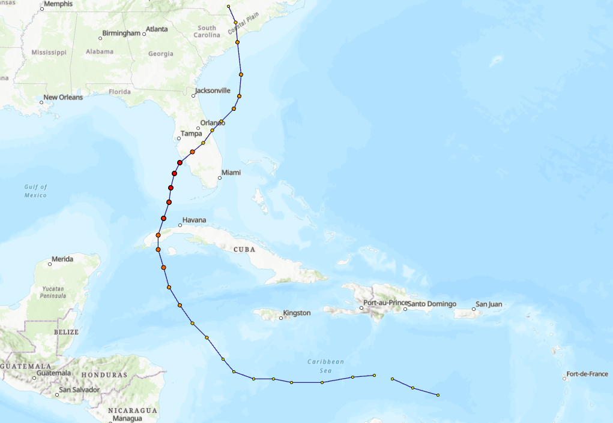
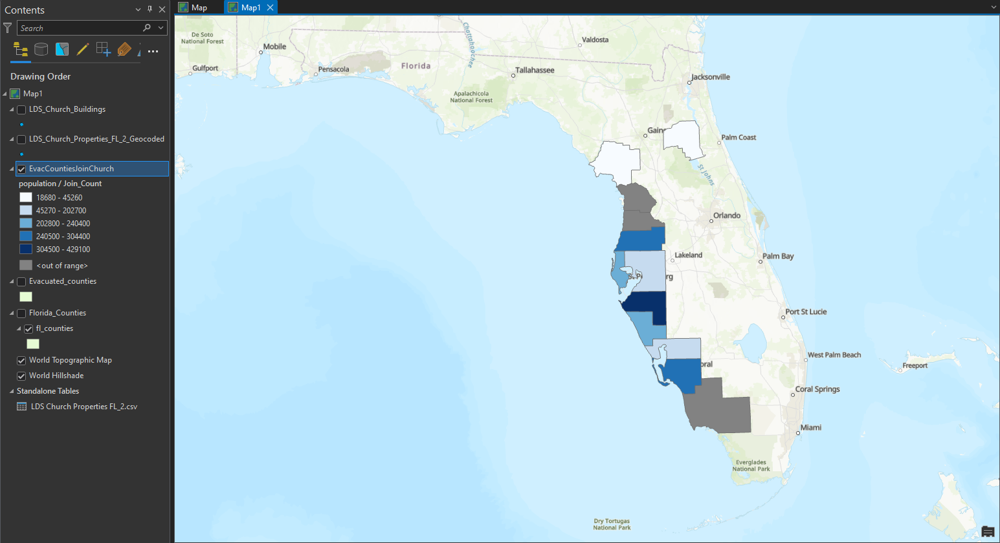
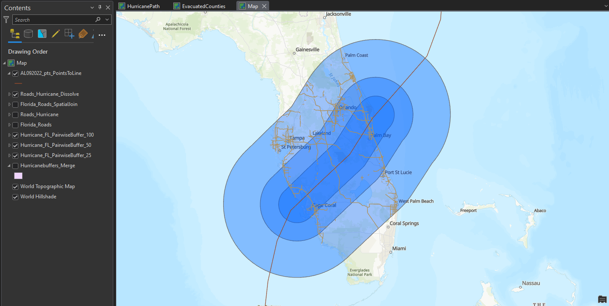
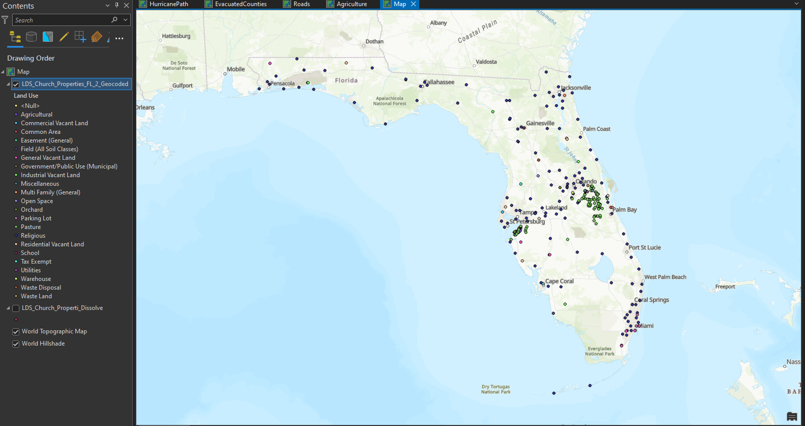

GIS Coursework / Week 05
Hurricane Ian




Overview
Analyzed Hurricane Ian’s path and its impact on Florida counties and Church-owned properties, identifying evacuation-relevant roads and affected agricultural land.
Process
Used Points to Line to trace the hurricane’s path, Spatial Join and Export Features to relate evacuated counties to church buildings, Buffer and Definition Query to isolate high-use roads near the storm track, and Dissolve to summarize agricultural land by use type.